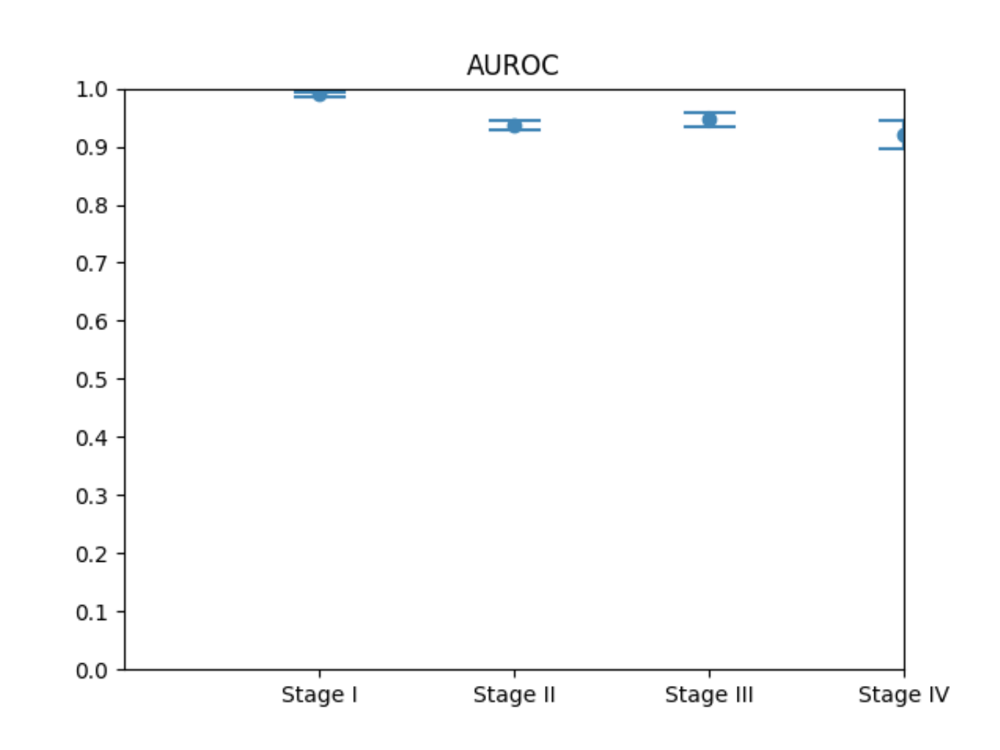
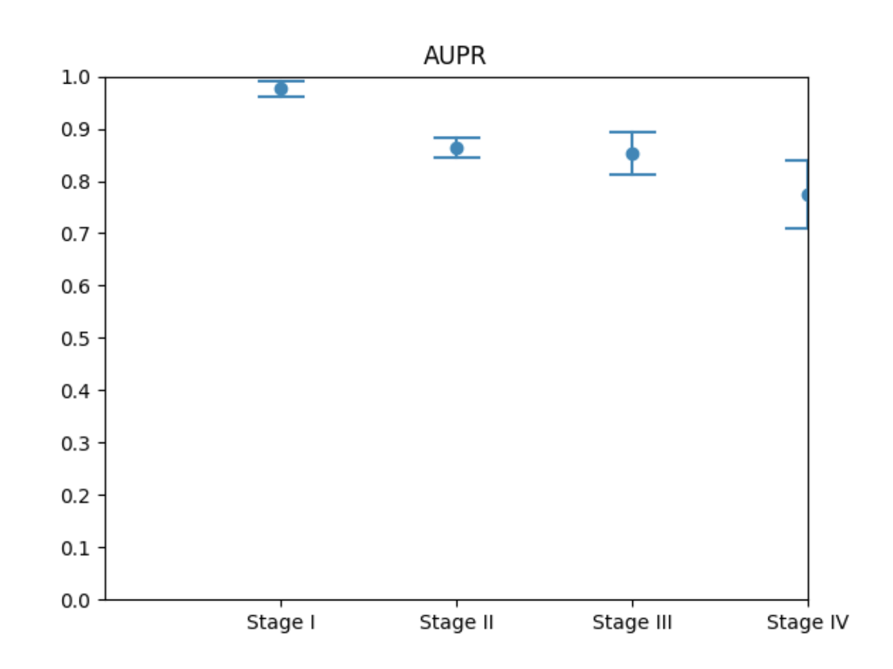
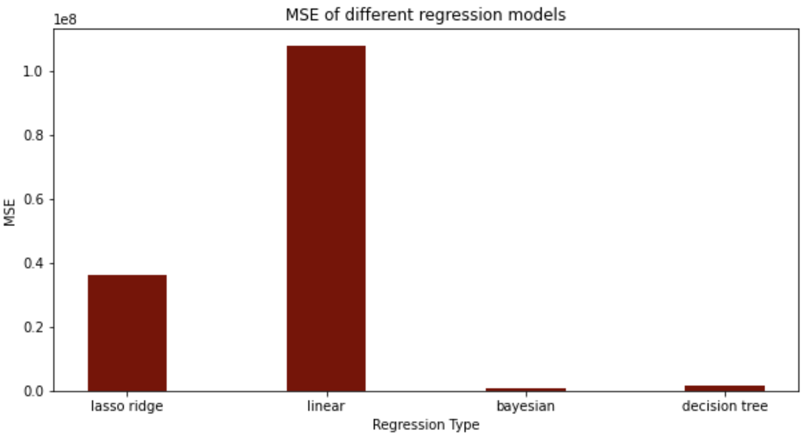

Evaluating Fungal Feature Importance in Predicting Life Expectancy for Cancer Patients
Benjamin Sacks, Ethan Chan, Mark Zheng
Background & Research Question
- 2 million Americans diagnosed with cancer every year
- Previous work has been done to distinguish between cancer types with only fungal DNA from around the tumor
- Can we learn about the progression of the cancer, as measured by cancer stage and days to death, if we incorporated data about the patient and sample as well?
Data Collection
- Fungal counts and metadata feature tables obtained from the TCGA cohort of the aforementioned study batch corrected to the WIS cohort
- Tissue samples were taken from and around tumors and then sequenced using ITS2 (WIS) and shotgun metagenomic approach (TCGA)
- For more detail, see: https://www.cell.com/cell/fulltext/S0092-8674(22)01127-8
Methods Overview
- Metadata was preprocessed using One Hot Encoding and Ordinal Encoding and then merged with the fungal counts table
- Null values were imputed with the means of their respective columns
- For cancer stage classification, the data was fed through a Gradient Boost Classifier for each “stage vs all” classification with 10-folds cross validation
- For regression, the data was put through a lasso ridge regression with 10-folds cross validation and a Mean Squared Error loss function
Summary of Findings
- We were able to classify each cancer stages vs all other stages with high accuracy, obtaining high AUROC (90+%) and AUPR (80+%) scores
- We were unsuccessful in being able to predict days to death through combining metadata and fungal counts data, obtaining very high loss
Next Steps
- Discover underlying biological grounds for strongly weighted features
- Explore if strategized fungal interruption for individuals of specific metadata profiles will have an effect on cancer resilience
Graphs


